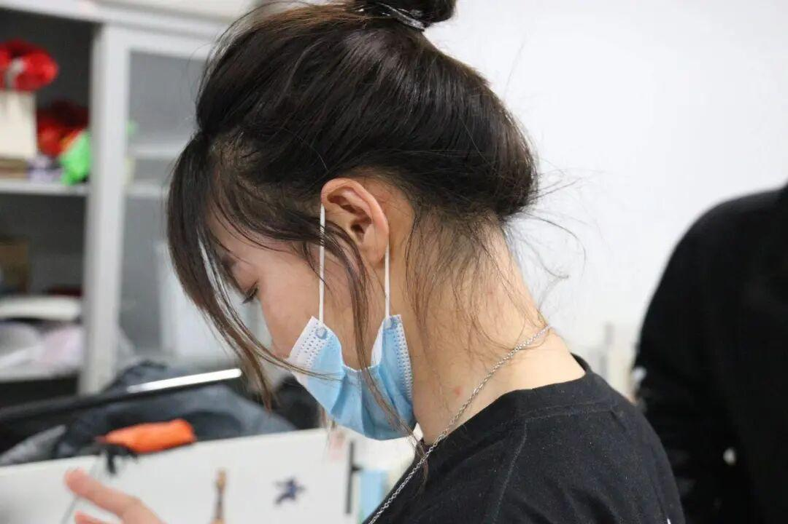
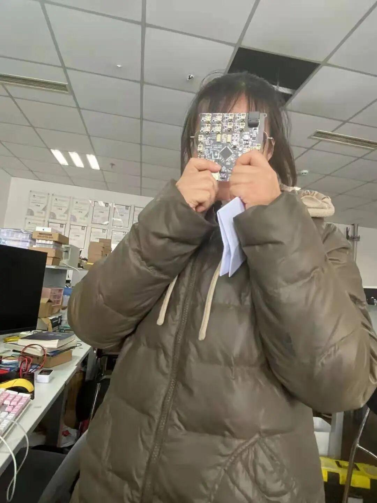
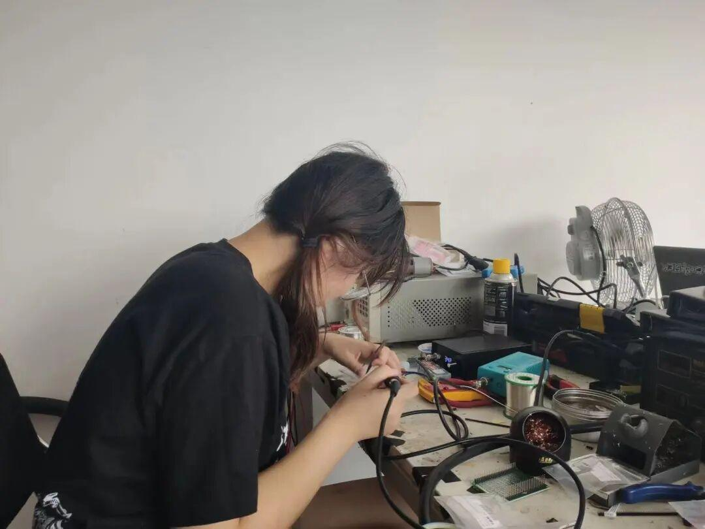
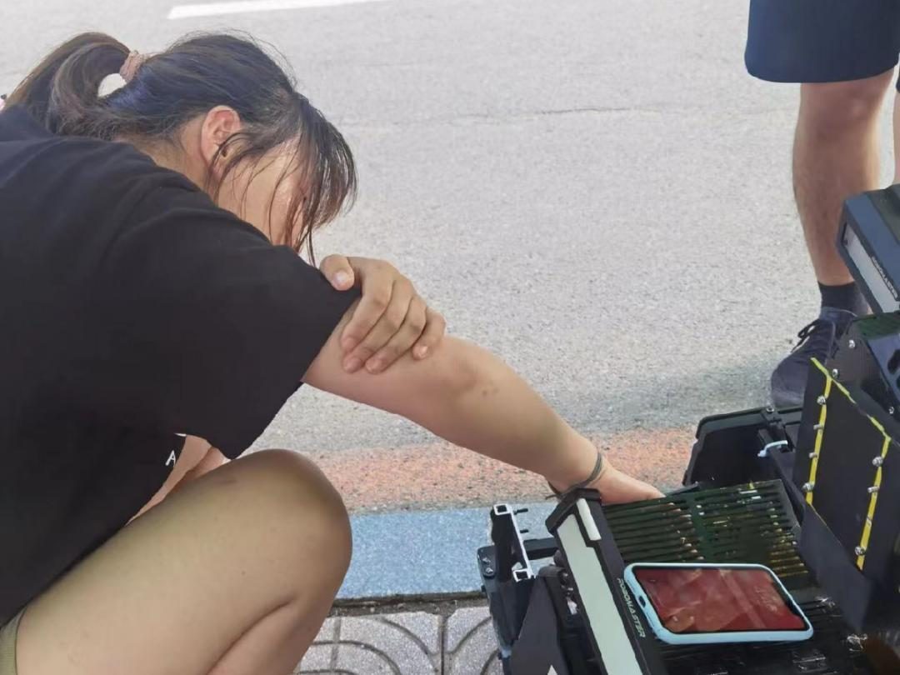

战队采访实录
战队采访安排
INTERVIEW ARRANGEMENT
# 采访，从搞事情开始#
还在等什么，快来加入我们吧，随小编一起八卦，咳咳，小编这么高冷，是绝对不会有八卦这一想法的（才怪）。话不多说，让我们进入今天的采访吧。


身为硬件组的团宠之一，慧姐显然气场强大，以至于让我都不敢搞怪了，（当然，这只是暂时的），接下来，让我们开始采访。
别人眼中的她
小编: 你眼中的孙慧是怎样的？
壮壮: 孙慧，“电协第一花”（女汉子），熟识各大学校战队的队员，闲着没事喜欢去和东北大学战队的人吃饭。此外，孙慧与西安交大交情甚笃，上个学期他们专门给孙慧送了件队服。但是，即使如此——还是——没有男朋友，希望有兴趣者给她找个男朋友。

小编: 请自我介绍一下。
慧姐: 大家好，我是20级战队硬件组孙慧，硬件组美女，战队开心果，当之无愧的团宠，战队中才华出众的淑女（最终解释权归慧姐所有，不接受反驳）。
小编: 进入战队后有什么收获？
慧姐: 身为最开始的20级战队硬件组独苗，对于收获，主要是获得了一些关于实战方面的知识，例如一些开关电源设计方面的知识（正在学），以及一些机械结构方面的知识，还有代码编写及电子方面的知识。由于我是从材料院转到自动化院的，所以，专业方面改变让课程方面也有一些变动，更能体会不同专业之间知识的综合应用。在战队这一段时间让我登上了新的平台，在与外校交流的过程中开拓了眼界。与东大，华南虎，哈工大，西安交通大学等名校的比赛和交流。让我也了解到了自己跟这些名校之间的差距。
小编: 关于战队，有没有什么想要爆料的糗事？（不怀好意）
慧姐: 有没有什么糗事，那肯定是壮壮学长跟嗯嗯嗯（话音逐渐变小，此时，壮壮学长突然出现）

小编: 战队有没有社交牛逼症达人？
慧姐: 没有，我能让他们把我供出来吗。
小编: 关于RoboMaster比赛，你有什么感悟？
慧姐: 最大的感悟就是那些为了梦想而彻夜奋斗的时光吧。为了一个目标而不懈地努力，彻夜奋斗。为了比赛而通宵地准备，还要兼顾实验跟考核任务，尤其我是转专业的，课贼多，从周一到周末满满当当。凌晨两三点睡成为常态，七点多钟起床成了一种习惯。要克服种种困难，同时面临四六级考试，以及未来的考研问题等一些压力山大大的问题。但是大家最终一起克服了。在比赛过程中也碰到过一些问题，比如在北部赛区的比赛中碰到过车坏了不能动的突发状况，但是大家也没有因此气馁，而是空前团结地战胜了这些困难，修好了车。其实我感觉大家都挺辛苦的，备赛前一个月左右，大家平均每天只睡四五个小时，队长更是几天几夜没有合眼，就为了能把比赛打好，因为比赛周期长，任务重，压力大，我们谁都不想因为自己的原因输掉比赛。
小编: 进入战队后有没有碰到过奇葩问题？
慧姐: 进入战队来碰到的奇葩问题，奇葩问题那肯定是你们运营组的，还有比你们运营组更奇葩的问题吗？你们队谁是最帅的，我忍了；谁是最最有特点的，这是什么问题。
小编：我不是，我没有，别瞎说，这个问题到此结束。
小编: 关于战队老学长，有没有什么想吐槽的？
慧姐: 那肯定有啊，关于佩奇学长陪媳妇这件事，关于机械组壮壮学长女装这件事，关于陶涌天天抢吃的这件事。有吃的立刻现身，吃完立刻消失，关于张琛抢小毛驴儿玩具这件事。
小编：慢点，慢点，我的小本本都快记不下了（疯狂吃瓜ing）
小编: 众所周知，我们这是一所理工大学，男多女少成为常态，请问关于战队的恋爱问题你是怎么看的？
慧姐:怎么看，吃着狗粮看，啊，不是，我是说恋爱问题的话，战队给我打击很大。不说找到女朋友的佩奇学长了啊，在我发现硬件组的关一郎同学跟刘清清同学成双成对的时候，我就已经意识到事情不妙了，当突然有一天某人要跟我解除情侣空间之后，我更无语了。这还不包括自带对象的王杰学长。唉，我能怎么办，我也很无奈好不好，只能说单身狗伤不起。

小编: 战队中对你帮助最大的是谁？
慧姐: 战队中对我帮助比较大的有天哥，帮我解决比赛和生活过程中一些问题，调节心态；东哥则是我们的快乐小源泉，还有苏老板总是不厌其烦地在我们身后帮我们解决一些烂摊子，会耐心的教我们一些知识。
小编: 对未来有什么规划？
慧姐: 冲国一，冲国一，冲国一，重要的事情说三遍。
编辑：小李
文字：小李